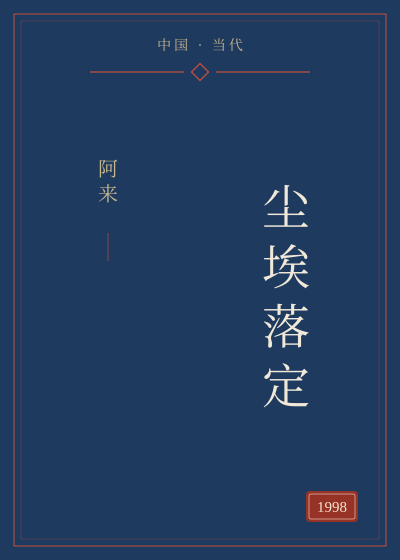
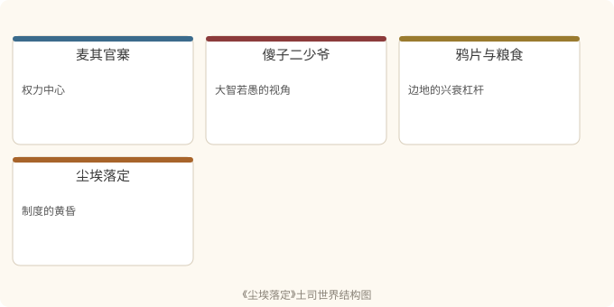

尘埃落定
一、基本信息
| 作者 | 阿来 |
|---|---|
| 成书/出版 | 1998年人民文学出版社出版（中国作家网官方名单 C012）；2000年获第五届茅盾文学奖（C012） 历届茅盾文学奖获奖作品一览（中国作家网）（官方文学机构） |
| 国别/地区 | 中国 |
| 时代 | 现当代 · 当代 |
| 体裁 | 长篇小说 |
| 语言 | 汉语（白话·藏地风情） |

《尘埃落定》土司世界结构图（主题·结构图）
二、创作背景
中国作家网官方名单（C012）：第五届（1995—1998）茅盾文学奖获奖作品含《尘埃落定》阿来（人民文学出版社）。
题材：清末民国初年康巴藏区麦其土司家族的兴衰——土司制度的瓦解（通说待核）。
三、内容脉络
麦其土司家的'傻子'二少爷以看似愚钝的眼光见证权力、粮食、鸦片与边界之争（通说待核）。
结局：尘埃落定——土司制度随时代崩解（通说待核）。
四、主要人物表
| 人物 | 身份 | 说明 |
|---|---|---|
| 傻子二少爷 | 叙述者 | 大智若愚的视角（通说待核） |
| 麦其土司 | 父亲 | 权力化身（通说待核） |
五、主题与艺术特点
- 权力与欲望的末世寓言（通说待核）。
- 傻子视角的诗性智慧（通说）。
- 汉藏边地的历史变迁（通说）。
六、影响与评论
- 中国作家网官方名单：第五届茅盾文学奖获奖作品（1995—1998评奖周期，人民文学出版社）。
历届茅盾文学奖获奖作品一览（中国作家网）（官方文学机构） - 被视为藏地书写的里程碑、多次改编影视剧（通说待核）。
历届茅盾文学奖获奖作品一览（中国作家网）（官方文学机构）
七、阅读建议
难点
- 傻子视角的叙事可靠性——似愚实慧。
- 土司制度的历史背景注释。
- 《尘埃落定》（人民文学出版社，C012 官方名单口径）。
可与《白鹿原》对照：两种家族史诗。
八、待核实
- 1994年完稿与退稿史（多次退稿说）待核。
- '土司制度的凄婉挽歌'评语出处待核。
- 阿来最年轻茅奖得主说的官方出处待核。
- 电视剧2003年与2023年改编待核。
本页主要来源
阿来的其他收录作品：尘埃落定